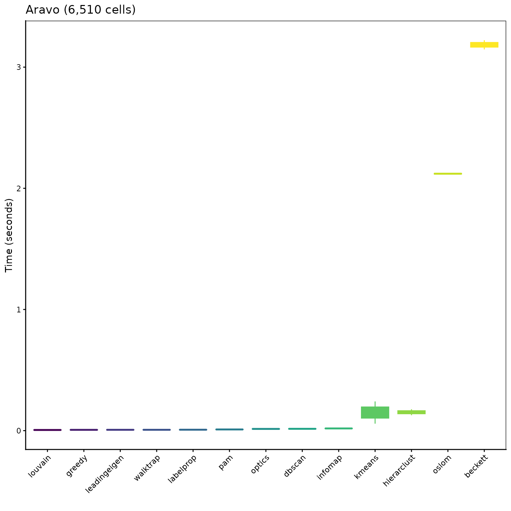
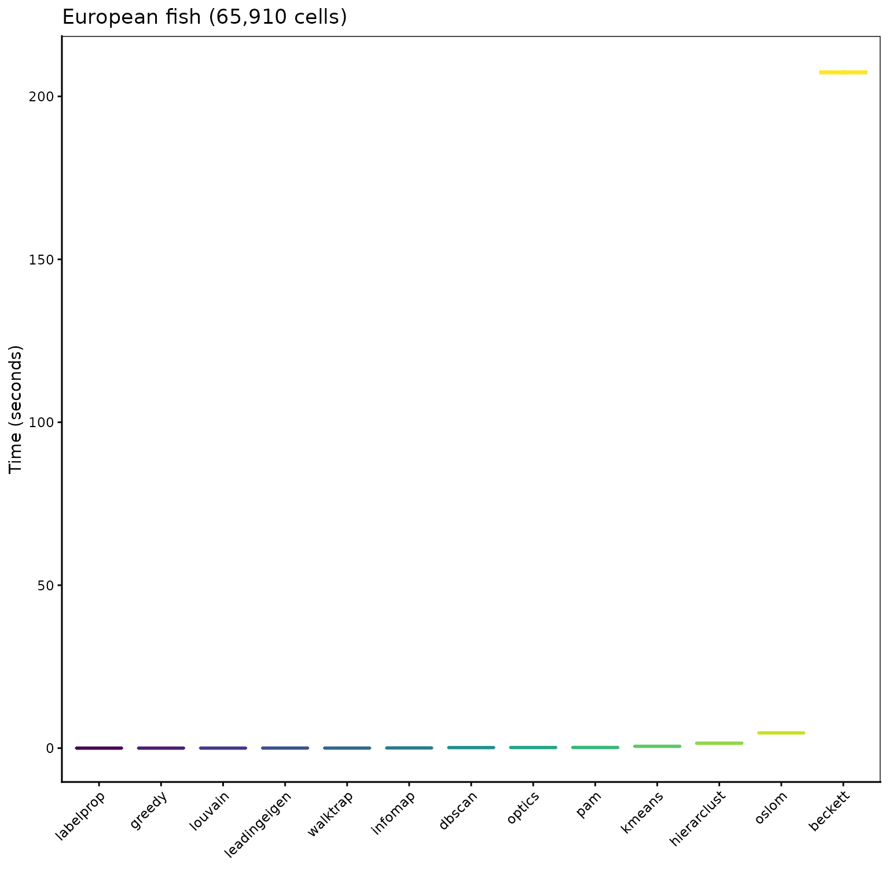
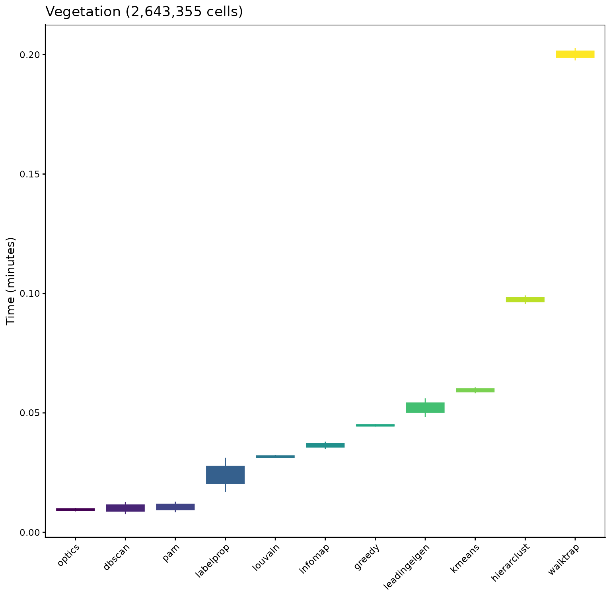

4.4 Microbenchmark
Pierre Denelle, Boris Leroy and Maxime Lenormand
2026-01-18
Source:vignettes/a4_4_microbenchmark.Rmd
a4_4_microbenchmark.RmdIn this vignette, we aim at showing the differences in terms of
computation time between the different algorithms available in
bioregion. For this purpose, we use three datasets of
varying size.
For each dataset, we use a site x species matrix as well as a
dissimilarity matrix which we compute using
bioregion::dissimilarity().
1. Datasets
1.1. Vegemat
The first dataset comes available with bioregion and was
analyzed in this
article. It contains the abundance of 3,697 plant species
distributed in 715 sites in the French Mediterranean area. From this
dataset we use the two following files: vegedf
a data.frame with 460,878 rows and 3 columns (Site, Species
and Abundance) and vegemat
a co-occurrence matrix containing the same information
gathered in a matrix with 715 rows and 3,697 columns.
data("vegedf")
data("vegemat")
vegemat_dissim <- dissimilarity(vegemat, metric = c("abc", "Simpson"))
vegemat_df <- mat_to_net(vegemat, weight = TRUE, remove_zeroes = TRUE)1.2. European fish
The second dataset also comes available with bioregion
and contains distribution of 195 freshwater fish distributed in the
basins of Europe.
data("fishmat")
fishdissim <- dissimilarity(fishmat, metric = "all")
data("fishdf")1.3. Aravo
The third dataset, called aravo, is retrieved from the
package ade4. It contains the distribution of 82 alpine
plants in 75 sites distributed in the French Alps.
## [1] 75 82
ara_dissim <- dissimilarity(aravo, metric = "all")
ara_df <- mat_to_net(aravo, weight = TRUE, remove_zeroes = TRUE)2. Microbenchmark
We here assess the time needed by each clustering algorithm on the three datasets loaded above.
install_binaries()
mbm <- suppressMessages(
microbenchmark(
# aravo
ara_nhclu_dbscan = nhclu_dbscan(dissimilarity = ara_dissim,
index = "Simpson", plot = FALSE),
ara_nhclu_kmeans = nhclu_kmeans(ara_dissim, n_clust = 2:10,
index = "Simpson"),
ara_nhclu_pam = nhclu_pam(ara_dissim, n_clust = 2:10, index = "Simpson"),
ara_hclu_hierarclust = hclu_hierarclust(dissimilarity = ara_dissim,
n_clust = 5,
optimal_tree_method = "best"),
ara_hclu_optics = hclu_optics(ara_dissim, index = "Simpson"),
ara_netclu_beckett = netclu_beckett(ara_df),
ara_netclu_greedy = netclu_greedy(ara_df),
ara_netclu_labelprop = netclu_labelprop(ara_df),
ara_netclu_leadingeigen = netclu_leadingeigen(ara_df),
ara_netclu_oslom = netclu_oslom(ara_df),
ara_netclu_walktrap = netclu_walktrap(ara_df),
ara_netclu_infomap = netclu_infomap(ara_df),
ara_netclu_louvain = netclu_louvain(ara_df),
# fish vertebrates
fish_nhclu_dbscan = nhclu_dbscan(dissimilarity = fishdissim,
index = "Simpson", plot = FALSE),
fish_nhclu_kmeans = nhclu_kmeans(fishdissim, n_clust = 2:10,
index = "Simpson"),
fish_nhclu_pam = nhclu_pam(fishdissim, n_clust = 2:10, index = "Simpson"),
fish_hclu_hierarclust = hclu_hierarclust(dissimilarity = fishdissim,
n_clust = 5,
optimal_tree_method = "best"),
fish_hclu_optics = hclu_optics(fishdissim, index = "Simpson"),
fish_netclu_beckett = netclu_beckett(fishdf),
fish_netclu_greedy = netclu_greedy(fishdf),
fish_netclu_labelprop = netclu_labelprop(fishdf),
fish_netclu_leadingeigen = netclu_leadingeigen(fishdf),
fish_netclu_oslom = netclu_oslom(fishdf),
fish_netclu_walktrap = netclu_walktrap(fishdf),
fish_netclu_infomap = netclu_infomap(fishdf),
fish_netclu_louvain = netclu_louvain(fishdf),
# vegetation
veg_nhclu_dbscan = nhclu_dbscan(dissimilarity = vegemat_dissim,
index = "Simpson", plot = FALSE),
veg_nhclu_kmeans = nhclu_kmeans(vegemat_dissim, n_clust = 2:10,
index = "Simpson"),
veg_nhclu_pam = nhclu_pam(vegemat_dissim, n_clust = 2:10,
index = "Simpson"),
veg_hclu_hierarclust = hclu_hierarclust(dissimilarity = vegemat_dissim,
n_clust = 5,
optimal_tree_method = "best"),
veg_hclu_optics = hclu_optics(vegemat_dissim, index = "Simpson"),
# veg_netclu_beckett = netclu_beckett(vegemat_df),
veg_netclu_greedy = netclu_greedy(vegemat_df),
veg_netclu_labelprop = netclu_labelprop(vegemat_df),
veg_netclu_leadingeigen = netclu_leadingeigen(vegemat_df),
# veg_netclu_oslom = netclu_oslom(vegemat_df),
veg_netclu_walktrap = netclu_walktrap(vegemat_df),
veg_netclu_infomap = netclu_infomap(vegemat_df),
veg_netclu_louvain = netclu_louvain(vegemat_df),
times = 2))
mbm_plot <- data.frame(mbm)
mbm_plot$expr <- as.character(mbm_plot$expr)
mbm_plot$dataset <- ifelse(
grepl("ara_", mbm_plot$expr),
paste0("Aravo (", nrow(aravo) * ncol(aravo), " cells)"),
ifelse(grepl("fish", mbm_plot$expr),
paste0("Fish (", nrow(fishmat) * ncol(fishmat), " cells)"),
paste0("Vegetation (", nrow(vegemat) * ncol(vegemat), " cells)")))
mbm_plot$algorithm <- gsub( ".*_", "", mbm_plot$expr)
# Time in minutes
mbm_plot$time_min <- mbm_plot$time / 60e9
# Time in seconds
mbm_plot$time_sec <- mbm_plot$time / 1e9Plotting the results.
ggplot(mbm_plot[which(mbm_plot$dataset == "Aravo (6150 cells)"), ],
aes(reorder(algorithm, time_sec), time_sec)) +
geom_boxplot(aes(color = reorder(algorithm, time_sec),
fill = reorder(algorithm, time_sec)), show.legend = FALSE) +
scale_color_viridis_d("Algorithm") +
scale_fill_viridis_d("Algorithm") +
labs(title = "Aravo (6,510 cells)", x = "", y = "Time (seconds)") +
theme_classic() +
theme(panel.border = element_rect(fill = NA),
axis.text.x = element_text(angle = 45, vjust = 1, hjust = 1))
ggplot(mbm_plot[which(mbm_plot$dataset == "Fish (65910 cells)"), ],
aes(reorder(algorithm, time_sec), time_sec)) +
geom_boxplot(aes(color = reorder(algorithm, time_sec),
fill = reorder(algorithm, time_sec)), show.legend = FALSE) +
scale_color_viridis_d("Algorithm") +
scale_fill_viridis_d("Algorithm") +
labs(title = "European fish (65,910 cells)",
x = "", y = "Time (seconds)") +
theme_classic() +
theme(panel.border = element_rect(fill = NA),
axis.text.x = element_text(angle = 45, vjust = 1, hjust = 1))
OSLOM and Beckett too slow, not ran so far on the Vegetation data.
ggplot(mbm_plot[which(mbm_plot$dataset == "Vegetation (2643355 cells)"), ],
aes(reorder(algorithm, time_min), time_min)) +
geom_boxplot(aes(color = reorder(algorithm, time_min),
fill = reorder(algorithm, time_min)), show.legend = FALSE) +
scale_color_viridis_d("Algorithm") +
scale_fill_viridis_d("Algorithm") +
labs(title = "Vegetation (2,643,355 cells)", x = "", y = "Time (minutes)") +
theme_classic() +
theme(panel.border = element_rect(fill = NA),
axis.text.x = element_text(angle = 45, vjust = 1, hjust = 1))